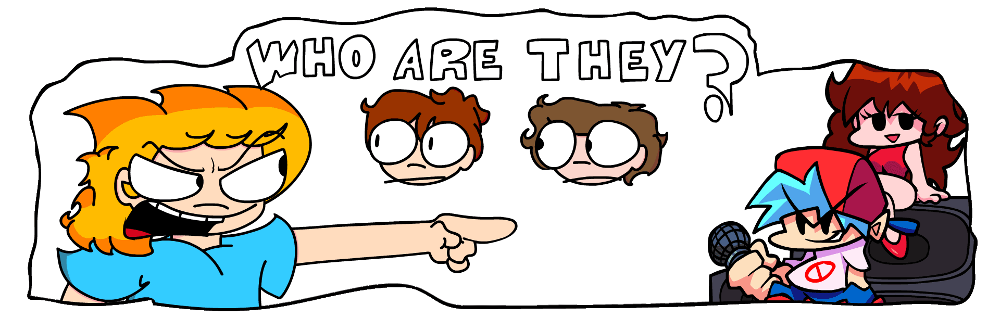
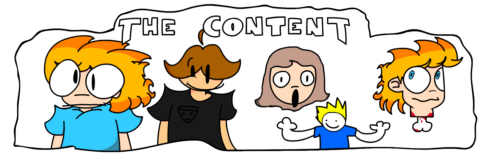
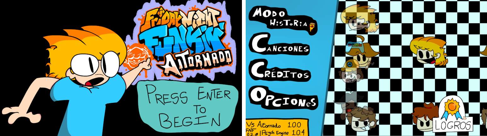
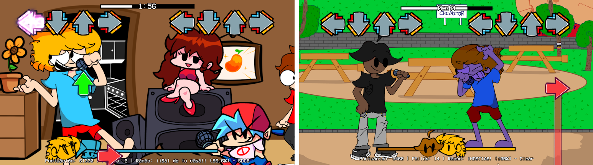

VS Aitornado
VS Aitornado it's a Friday Night Funkin' mod that adds new, fresh and original content from the hand of Aitor Torrijos, Daniel Lorente, Izan Rodríguez and more talented people. Began in the hot summer of July 2021, this mod aims to deliver a new experience, with a new coat of paint, new art style, new history and new wacky characters to fight against!
Aitornado, Dani and Neo ordered some pizza to dinner. When they got it in their house, a well known in the game duo break into it. Now they have to deal with them...
The mod will include the next content:
- 5 weeks with a tutorial included.
- 4 new wacky characters to fight against!
- 20 songs to break yo fingers or have a show!
- An hour worth of gameplay!
- Amazing live guitar tunes.
- New Achievements and redone menus.
- Lots of easter eggs and shitposts hidden.
The initial 1.0 version of VS Aitornado will come out with full translations on (Spain) Spanish and English, but more are in the way! We have plans and team members for translations, like Russian, Bengali, and plans for a Portuguese and Italian version. VS AITORNADO WILL GO INTERNATIONAL WITH TIME!!
 For more information on the project, you can check the main page, in Gamebanana, or the Youtube Trailer.